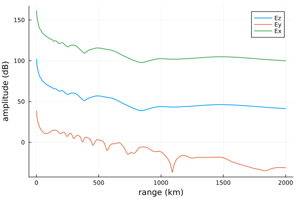
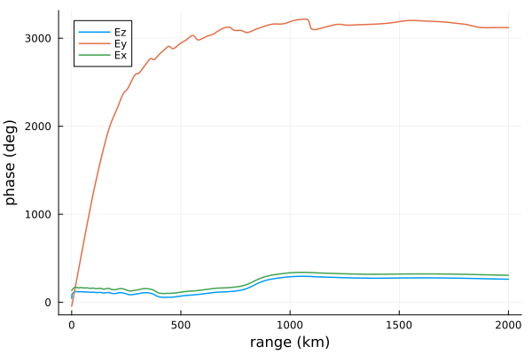
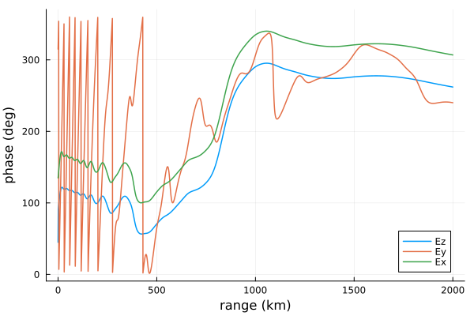
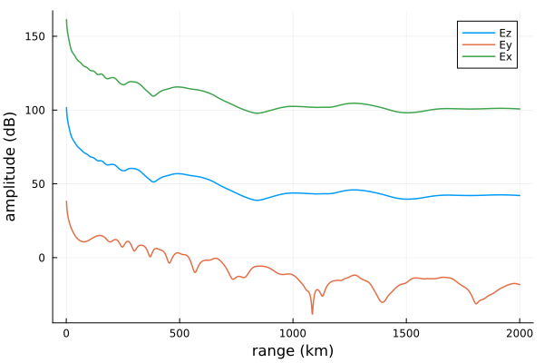
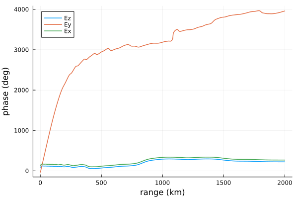
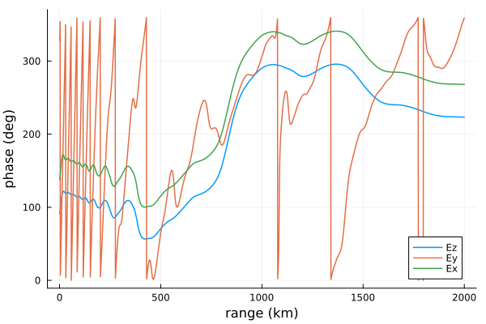

Multiple field components
Multiple components of the propagating electromagnetic field can be calculated and sampled at once. This is greatly advantageous compared to calling propagate multiple times because the runtime of propagate is dominated (>90%) by searching for waveguide eigenangles. Relatively little compute time is required to calculate and sum the fields associated with each individual waveguide mode.
Let's load the necessary packages.
using Plots
using LongwaveModePropagator
using LongwaveModePropagator: QE, MEFields
Each supported electromagnetic Field is an Enum defined in an exported baremodule named Fields. The supported fields can be returned form the REPL
Fields.FieldEnum LongwaveModePropagator.Fields.Field:
Ez = 0
Ey = 1
Ex = 2
E = 3The $x$ axis extends from the transmitter along the ground in the direction of the receiver. The $z$ axis extends vertically upward into the ionosphere so that the wavefields are propagating in the $x-z$ plane. The $y$ axis is perpendicular to the plane and completes the right handed coordinate system.
Because of the scope of Enum objects, individual fields are specified with a dot syntax like
Fields.EzEz::Field = 0Fields.Ez, Fields.Ex, and Fields.Ey are self explanatory. Fields.E returns all three electric field components at once.
It is not necessary for a user to use the integer representation of the Enum.
Propagating multiple fields: HomogeneousWaveguide
Using the same conditions defined in the introduction, we'll define a model using a new GroundSampler with fieldcomponent Fields.E, run the model, and plot the results.
f = 24e3
tx = Transmitter(f)
ranges = 0:1e3:2000e3
field = Fields.E
rx = GroundSampler(ranges, field)
bfield = BField(50e-6, π/2, 0)
electrons = Species(QE, ME, z->waitprofile(z, 75, 0.35), electroncollisionfrequency)
ground = GROUND[5]
waveguide = HomogeneousWaveguide(bfield, electrons, ground)HomogeneousWaveguide{Species}(BField(5.0e-5, 6.123233995736766e-17, 0.0, -1.0), Species(-1.602176634e-19, 9.1093837015e-31, FunctionWrappers.FunctionWrapper{Float64, Tuple{Float64}}(Ptr{Nothing} @0x00007f2f2a95ecb0, Ptr{Nothing} @0x00007f2f035a00a0, Base.RefValue{Main.var"#1#2"}(Main.var"#1#2"()), Main.var"#1#2"), FunctionWrappers.FunctionWrapper{Float64, Tuple{Float64}}(Ptr{Nothing} @0x00007f2f5b977640, Ptr{Nothing} @0x00007f2f035a00a8, Base.RefValue{typeof(electroncollisionfrequency)}(LongwaveModePropagator.electroncollisionfrequency), typeof(electroncollisionfrequency))), Ground(15, 0.001), 0.0)The propagate function returns a tuple of complex electric field, amplitude in dB μV/m, and phase in radians.
E, a, p = propagate(waveguide, tx, rx);You'll notice that E, a, and p are 2001 × 3 matrices
size(E), size(a), size(p)((2001, 3), (2001, 3), (2001, 3))The columns are, in order, the Ez, Ey, and Ex field components.
Here are quick plots of the amplitude
fieldlabels = ["Ez" "Ey" "Ex"]
plot(ranges/1000, a;
xlabel="range (km)", ylabel="amplitude (dB)",
linewidth=1.5, label=fieldlabels)
and phase.
plot(ranges/1000, rad2deg.(p);
xlabel="range (km)", ylabel="phase (deg)",
linewidth=1.5, label=fieldlabels)
The Ey phase grows rapidly - an alternative plot would mod2pi the results to "undo" the phase unwrapping applied by propagate.
plot(ranges/1000, rad2deg.(mod2pi.(p));
xlabel="range (km)", ylabel="phase (deg)",
linewidth=1.5, label=fieldlabels)
Propagating multiple fields: SegmentedWaveguide
In this example we'll have a SegmentedWaveguide with two segments.
distances = [0.0, 1000e3]
species = [Species(QE, ME, z->waitprofile(z, 75, 0.35), electroncollisionfrequency),
Species(QE, ME, z->waitprofile(z, 82, 0.5), electroncollisionfrequency)]
waveguide = SegmentedWaveguide([HomogeneousWaveguide(bfield, species[i], ground,
distances[i]) for i in 1:2]);We can propagate just as before
E, a, p = propagate(waveguide, tx, rx);Here are quick plots of the amplitude
plot(ranges/1000, a;
xlabel="range (km)", ylabel="amplitude (dB)",
linewidth=1.5, label=fieldlabels)
and phase.
plot(ranges/1000, rad2deg.(p);
xlabel="range (km)", ylabel="phase (deg)",
linewidth=1.5, label=fieldlabels)
and again with phase wrapping
plot(ranges/1000, rad2deg.(mod2pi.(p));
xlabel="range (km)", ylabel="phase (deg)",
linewidth=1.5, label=fieldlabels)
This page was generated using Literate.jl.